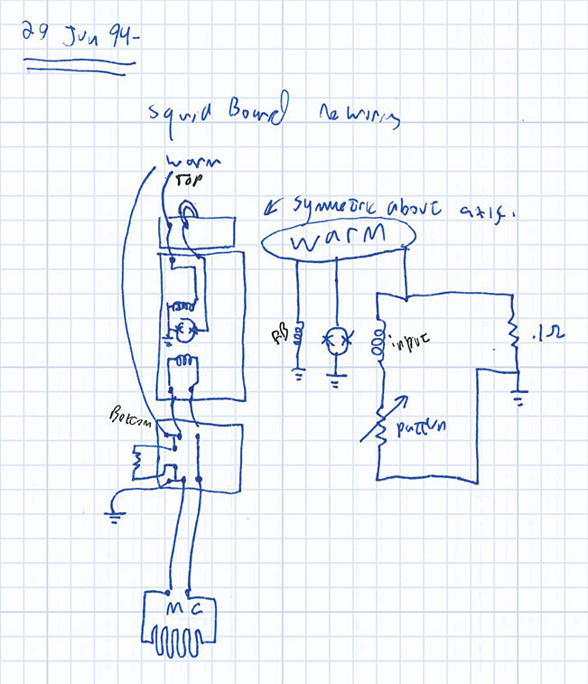

The phonon sensors use the knife-sharp edge of a supercondcting transition to acheive exquisite sensitivity. But for the sensors to fucntion, the temperature of the superconducting strip must be held right at its critical temperature. To solve this problem, Blas Cabrera built a circuit that maintains a constant voltage across the sensor, and keeps the heat-generating amplification stage well away from the detector itself.
When Kammerling-Onnes published data on the resistivity of mercury at low temperatures, physicists immediately recognized that the resistivity's sharp dependence on temperature represented an exquisitely sensitive sensor.
But mercury only enjoys such sensitivity for a moment - in the narrow temperature range around the transition temperature, a change of XX K changes the resistance by YY Ohms; outside this region, the same temperature change has ZZ orders of magnitude less impact on the resistance.
Holding the sensor right at this temperature for the entire duration of your experiment is not so easy.
The resistivity of mercury depends on its temperature. At room temperatures - and even well below - it doesn't depend very much on the temperature, making it a poor sensor. But as mercury goes through its superconducting transition, it becomes a powerful sensor.
Hold still.
Heat is the problem. A sensor that starts at exactly the right temperature soon runs into a problem: a physics process deposits some heat, warming the sensor. The superconducting transition happens over such a narrow temperature range; how long before you're well away from the superconducting transition temperature?
If the sensor is touching something cold, the unwanted heat will eventually transfer out of the sensor. The CDMS detectors serve nicely as this "bath" in our case. So our sensors will eventually cool down, returning to their useful state.
There's another problem, though - because current through the sensor will heat the sensor, it's possible to wire up a circuit that heats up uncontrollably: signal heats the sensor; so now the resistance of the signal is increased; and now a constant-current supply will increase the current; which increases the temperature of the sensor even more.
Blas suggested that we use a circuit with a constant voltage across the sensor, instead.

The sensor - a strip of metal that goes through a superconducting transition - is represented as a variable resistor in this diagram. The "shunt resistor" holds a (nearly) constant voltage across the sensor. Image from http://www.symmetrymagazine.org/article/january-2015/transition-edge-sensors.